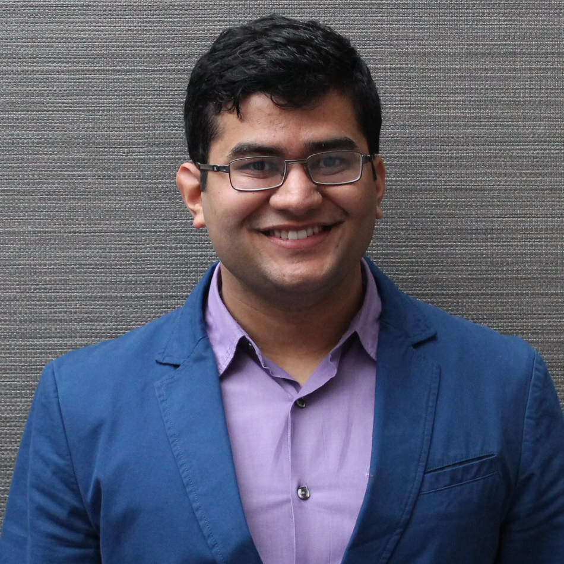
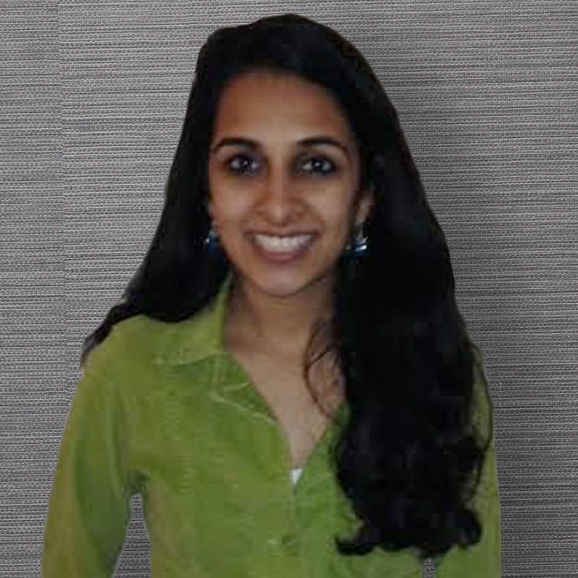
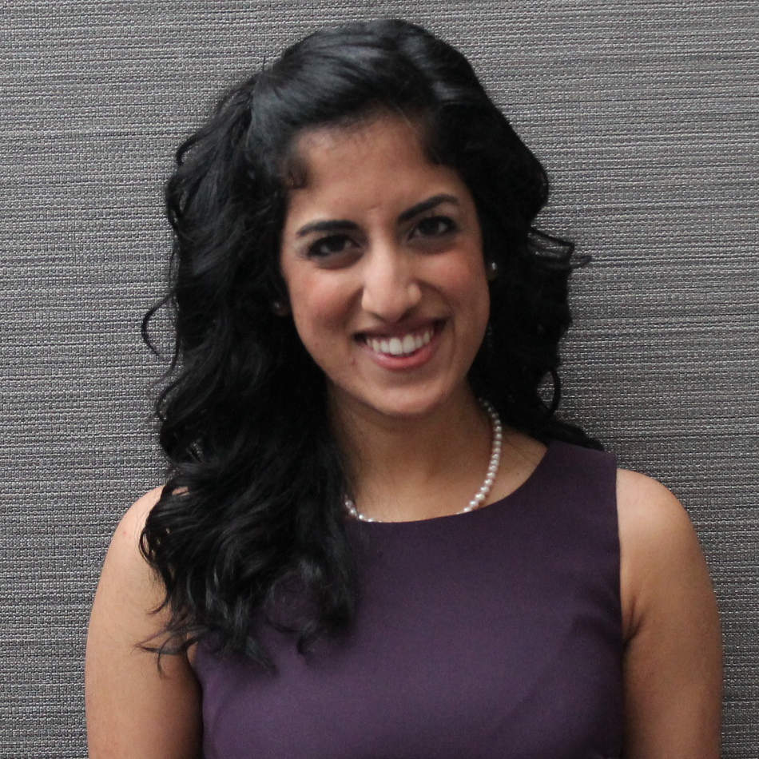

Co-Chairs
Parag Parekh
Executive Board Co-Chair
Sejal Dhruva
Executive Board Co-Chair
Aakash Shah
Convention Committee Co-Chair
Pathik Shah
Convention Committee Co-Chair
Adult Volunteer Committee
Kayuri Shah
AVC Co-Lead
Kunal Dagli
AVC Co-Lead
Vaishali Shah
AVC Co-Lead
Daytime Programming Committee

Priyal Gandhi
Daytime Programming Co-Lead

Shikhar Shah
Daytime Programming Co-Lead

Harsha Nahata
Daytime Programming Co-Lead
Fundraising Committee
Sunny Dharod
Fundraising Co-Lead
Anshul Mehta
Fundraising Co-Lead
Ravi Doshi
Fundraising Co-Lead
Hospitality Committee

Bonita Parikh
Hospitality Co-Lead
Khushali Gala
Hospitality Co-Lead
Aanal Gandhi
Hospitality Co-Lead
JNF Committee

Mayha Parikh
JNF Co-Lead

Krupa Shah
JNF Co-Lead
Public Relations Committee
Amit Shah
Public Relations Co-Lead
Megha Vipani
Public Relations Co-Lead
Virag Vora
Public Relations Co-Lead
Registration Committee
Ankit Shah
Registration Co-Lead
Bharat Srikishan
Registration Co-Lead

Priyank Shah
Registration Co-Lead
Security Committee
Kunal Shah
Security Co-Lead
Viraj Mehta
Security Co-Lead
Vishal Mehta
Security Co-Lead
Site Committee
Neeketa Sheth
Site Co-Lead
Salonee Shah
Site Co-Lead
Souvenirs Committee
Sonny Shah
Souvenirs Co-Lead
Anika Jain
Souvenirs Co-Lead
Neil Shah
Souvenirs Co-Lead
Social Committee
Jinen Shah
Social Co-Lead
Sneha Parikh
Social Co-Lead
Charmi Vakharia
Social Co-Lead